Johto Porymap library
Route 30 is installed in your open project. Other packages require matching native revisions. These stamps retain source ground and collision.
Prepared native objects
NewBarkTown · 01 Buildings | Laboratory
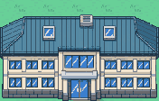
NewBarkTown · 01 Buildings | Annex
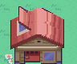
NewBarkTown · 01 Buildings | West home
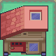
NewBarkTown · 01 Buildings | East home
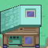
NewBarkTown · 01 Buildings | Staff home A
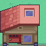
NewBarkTown · 01 Buildings | Staff home B
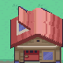
NewBarkTown · 02 Trees | Green tree / current ground
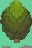
NewBarkTown · 03 Scenery | HGSS red mailbox / house anchor / grass
NewBarkTown · 03 Scenery | HGSS red mailbox / house anchor / grass @ 21,16
NewBarkTown · 03 Scenery | P11 New Bark windmill
NewBarkTown · 03 Scenery | F06 New Bark flowers
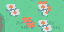
CherrygroveCity · 01 Buildings | PlayerHouse
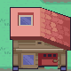
CherrygroveCity · 01 Buildings | GoldHouse
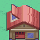
CherrygroveCity · 01 Buildings | NeighborHouse
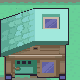
CherrygroveCity · 01 Buildings | HarborHouse
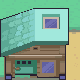
CherrygroveCity · 01 Buildings | GardenHouse
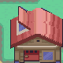
CherrygroveCity · 03 Scenery | Harbor ship
CherrygroveCity · 03 Scenery | Harbor skiff
CherrygroveCity · 03 Scenery | Dock horizontal span
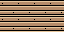
CherrygroveCity · 03 Scenery | Dock vertical span
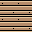
CherrygroveCity · 01 Buildings | C06 pokemon center
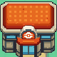
CherrygroveCity · 01 Buildings | M01 poke mart
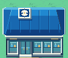
CherrygroveCity · 02 Trees | Green tree / current ground
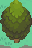
CherrygroveCity · 02 Trees | Pink tree - Cherrygrove only / current ground
CherrygroveCity · 03 Scenery | P06 Cherrygrove sign
CherrygroveCity · 03 Scenery | P07 Cherrygrove bench
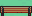
CherrygroveCity · 03 Scenery | P08 Cherrygrove fence
CherrygroveCity · 03 Scenery | F05 Cherrygrove flower bed
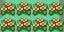
CherrygroveCity · 03 Scenery | W03 Cherrygrove reef
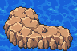
VioletCity · 01 Buildings | Sprout Tower
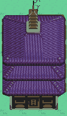
VioletCity · 01 Buildings | Lecture Hall
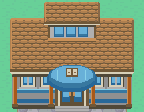
VioletCity · 01 Buildings | University and Library
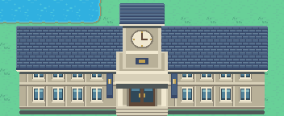
VioletCity · 01 Buildings | West Residence
VioletCity · 01 Buildings | South Residence
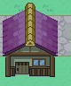
VioletCity · 01 Buildings | Northwest Residence
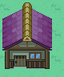
VioletCity · 03 Scenery | Teaching court
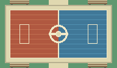
VioletCity · 03 Scenery | Bridge deck and rails
VioletCity · 03 Scenery | Lily pads
VioletCity · 03 Scenery | Lake islet
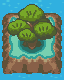
VioletCity · 01 Buildings | C06 pokemon center
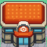
VioletCity · 01 Buildings | M01 poke mart
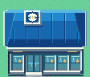
VioletCity · 02 Trees | Green tree / current ground
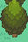
VioletCity · 03 Scenery | P01 Violet sign
VioletCity · 03 Scenery | P02 Violet bridge post
VioletCity · 03 Scenery | P03 Violet rail left
VioletCity · 03 Scenery | P04 Violet rail right
JohtoRoute36 · 01 Buildings | Violet gate
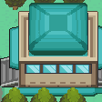
JohtoRoute36 · 01 Buildings | National Park gate
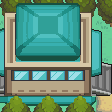
JohtoRoute36 · 01 Buildings | Alph gate
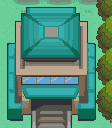
JohtoRoute36 · 04 Stairs | East-west flight 1
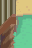
JohtoRoute36 · 04 Stairs | East-west flight 2
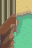
JohtoRoute36 · 06 Rock walls | Front complete cap and face 1
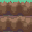
JohtoRoute36 · 06 Rock walls | Front complete cap and face 2
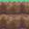
JohtoRoute36 · 06 Rock walls | Side complete grass rim
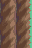
JohtoRoute36 · 03 Scenery | P05 Route sign
JohtoRoute31 · 01 Buildings | Gatehouse
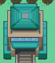
JohtoRoute31 · 04 Stairs | East-west flight
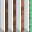
JohtoRoute31 · 04 Stairs | South flight
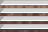
JohtoRoute31 · 05 Ledges | Joined low ledge
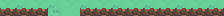
JohtoRoute31 · 06 Rock walls | Side wall
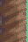
JohtoRoute31 · 06 Rock walls | Front wall and foot
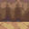
JohtoRoute31 · 02 Trees | Green tree / current ground
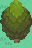
JohtoRoute31 · 02 Trees | Apricorn / green fruit / path
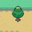
CherrygroveRoute29Approach · 05 Ledges | Joined run 1

CherrygroveRoute29Approach · 05 Ledges | Joined run 2

CherrygroveRoute29Approach · 05 Ledges | Joined run 3

CherrygroveRoute29Approach · 05 Ledges | Joined run 4

CherrygroveRoute29Approach · 05 Ledges | Joined run 5

CherrygroveRoute29Approach · 05 Ledges | Joined run 6

CherrygroveRoute29Approach · 05 Ledges | Joined run 9

CherrygroveRoute29Approach · 01 Buildings | Gatehouse

CherrygroveRoute29Approach · 02 Trees | Green tree / current ground

CherrygroveRoute29Approach · 02 Trees | Apricorn / green fruit / grass

CherrygroveRoute29Approach · 03 Scenery | F06 New Bark flowers

CherrygroveRoute30Approach · 01 Buildings | MrPokemon
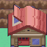
CherrygroveRoute30Approach · 01 Buildings | SouthernHouse

CherrygroveRoute30Approach · 04 Stairs | north

CherrygroveRoute30Approach · 04 Stairs | upper-plateau

CherrygroveRoute30Approach · 04 Stairs | middle

CherrygroveRoute30Approach · 04 Stairs | southwest

CherrygroveRoute30Approach · 05 Ledges | Joined run 1
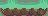
CherrygroveRoute30Approach · 05 Ledges | Joined run 2
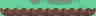
CherrygroveRoute30Approach · 05 Ledges | Joined run 3
CherrygroveRoute30Approach · 05 Ledges | Joined run 4
CherrygroveRoute30Approach · 05 Ledges | Joined run 5
CherrygroveRoute30Approach · 05 Ledges | Joined run 6
CherrygroveRoute30Approach · 03 Scenery | NorthernRouteSign

CherrygroveRoute30Approach · 03 Scenery | MrPokemonDirection

CherrygroveRoute30Approach · 03 Scenery | Route30
CherrygroveRoute30Approach · 02 Trees | Green tree / current ground

CherrygroveRoute30Approach · 02 Trees | Apricorn / pink fruit / grass
CherrygroveRoute30Approach · 02 Trees | Apricorn / green fruit / grass
JohtoRoute32 · 01 Buildings | Installed Center
JohtoRoute32 · 01 Buildings | North gate
JohtoRoute32 · 04 Stairs | North-south flight
JohtoRoute32 · 04 Stairs | East-west flight
JohtoRoute32 · 03 Scenery | Railway span
JohtoRoute32 · 03 Scenery | Pier deck
JohtoRoute32 · 02 Trees | Green tree
JohtoRoute32 · 06 Rock walls | Rock front and cap
JohtoRoute32 · 06 Rock walls | Rock side and cap